Understanding Physics and AI Through Interpretability
Research Focus: interpretability in Deep Learning
Each new modelling power created a new kind of opacity, and a new field to open it.
Interpretable by design
Explainable AI
Mechanistic interpretability
Why AI and Fundamental Physics are a good fit?
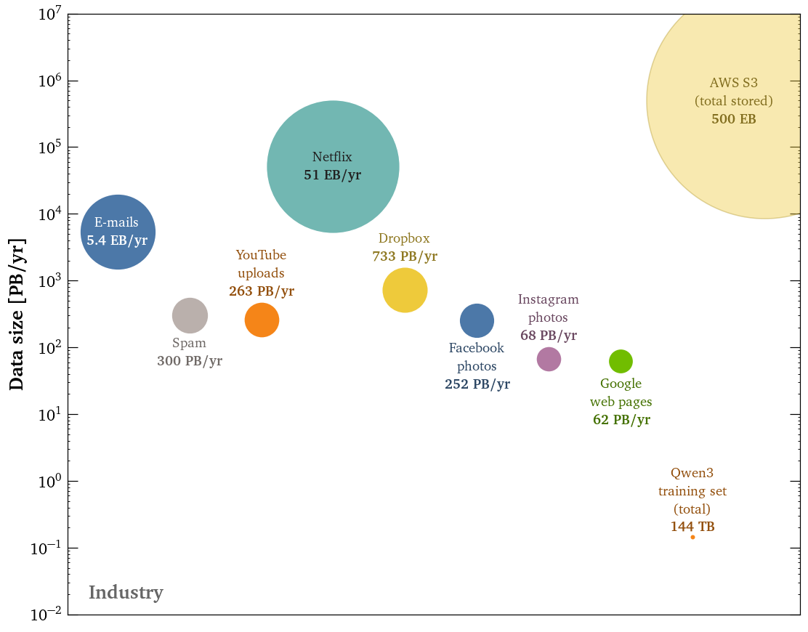
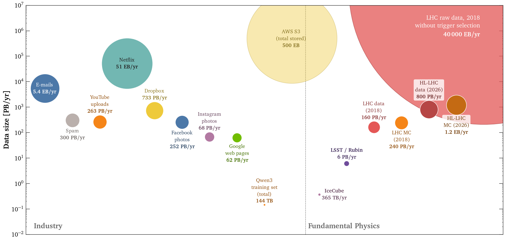
Physics produces data at industry scale, and beyond.
We know the physical process: simulators give ground truth.
→ Explanations can be checked.
ML and interpretability is driven by NLP. Physics require specific methodology, but offer different opportunities.

Interpretable Deep Learning for Real/Bogus classification with Uncertainty Quantification
Raphaël Bonnet-Guerrini1,2, Dominique Fouchez3, Vincenzo Piuri1, Benjamin Racine3, and Bruno Sanchez31Computer Science Department, University of Milan; 2INFN, Sezione di Milano; 3Centre de Physique des Particules de Marseille
From anomaly detection to weak supervision
We care about transient objects (e.g. Supernovae).
~10 k differences per image.
↳ the real ones are the anomalies.
↳ the real transients are noisy labels.
↳ Predict on the survey data: the real transients come out as Transient.
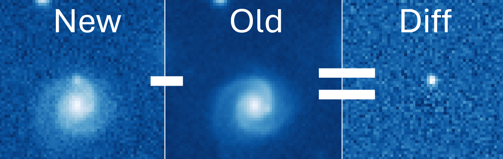
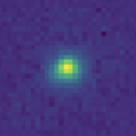
~4%
~96%
Robust training, uncertainty for free
↳ robust to the hidden real transients.
↳ uncertainty for cheap.
↳ uncertainties correlate with physics (SNR, brightness).
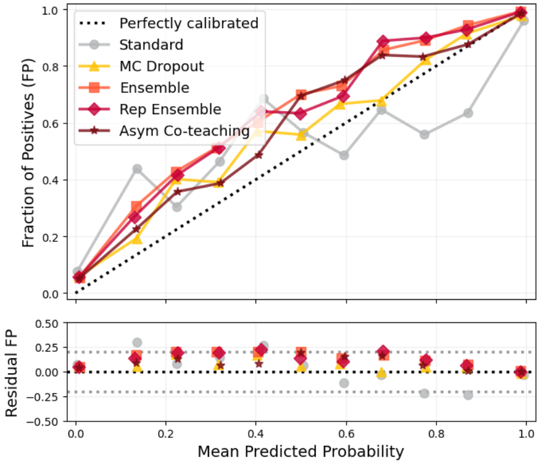
Latent space, interactive UMAP
Multiclass Classification without Labels via Posterior Simplex Geometry
Raphaël Bonnet-Guerrini1,2, Johann Ioannou-Nikolaides3, Troels Petersen3, and Vincenzo Piuri1 1Computer Science Department, University of Milan; 2INFN, Sezione di Milano;3Niels Bohr Institute, University of Copenhagen
Intuition: the geometry of the likelihood ratio
1 · Mixtures.
Two unlabeled samples of the same \(S\) and \(B\), with different signal fractions:
\(M_i=f_iS+(1-f_i)B\), \(f_1\neq f_2\), both unknown.
2 · Train. A classifier to tell \(M_1\) from \(M_2\): it only ever sees the mixture ID, never \(S\) or \(B\).
3 · Guarantee. \(\displaystyle \frac{p_{M_1}(x)}{p_{M_2}(x)}=\frac{f_1\,L_{S/B}(x)+(1-f_1)}{f_2\,L_{S/B}(x)+(1-f_2)}\) is monotonic in \(L_{S/B}=p_S/p_B\) as soon as \(f_1\neq f_2\): the mixture classifier ranks events exactly like the optimal S vs B classifier.
\[ g^\star(x)=\alpha(x)\,v_S+\bigl(1-\alpha(x)\bigr)\,v_B \]
\(K=2\): the mixture posterior is stuck on a segment between two fixed points.
\[ g^\star(x)=\sum_k \alpha_k(x)\,v_k, \qquad \sum_k\alpha_k(x)=1 \]
\(K=3\): same story one dimension up, the cloud fills a \((K-1)\)-simplex whose vertices are the classes.
↳ guarantee: the barycentric coordinates \(\alpha_k(x)\) are the Bayes-optimal multiclass classifier.
Only one assumption: classes look the same in every mixture, only their proportions change, \(\;p(x\mid Y=k,\,m)=p(x\mid Y=k)\).
Multiclass classification without labels
We propose two ways to use this guarantee and recover the simplex: a post-hoc simplex fit, or an architectural bottleneck.
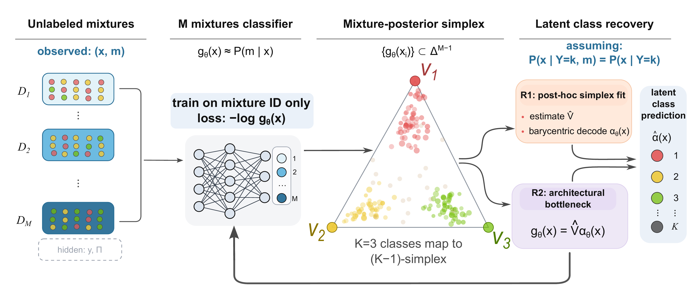
The geometry is really there
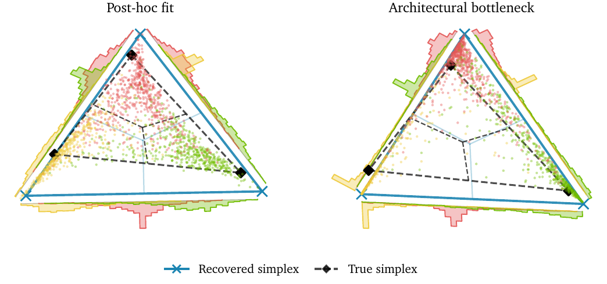
The likelihood ratio, a physicist's way of seeing classification, becomes a multiclass guarantee for ML.
Unlike unsupervised clustering, the output \(\alpha_k(x)\) is a class probability → probabilistic predictions and uncertainty quantification without labels.
Already used in physics:
Interpreting Parton Distributions with Shapley Values
Raphaël Bonnet-Guerrini1,3, Stefano Carrazza2,3, Stefano Forte2,3, Eva Groenendijk2,3, and Ramon Winterhalder2,31Computer Science Department, University of Milan; 2TIF lab, Physics Department, University of Milan;
3INFN, Sezione di Milano
Why Parton Distribution Functions (PDFs)?
- The LHC collides protons, but physics happens between their constituents, the partons.
- Partons are not directly observed → PDFs are the latent model we infer.
- PDF uncertainty directly limits LHC precision.
A proton: quarks and gluons, whose momentum distribution is the PDF.
Method & results: exact Shapley values on NNPDF
- Treat each PDF flavor as a player; its Shapley value = contribution to the fit quality \(\chi^2\).
- Only 8 flavors → \(2^7=128\) coalitions → the exact value, with no independence assumption (correlations kept) , attribution per flavor and per dataset.
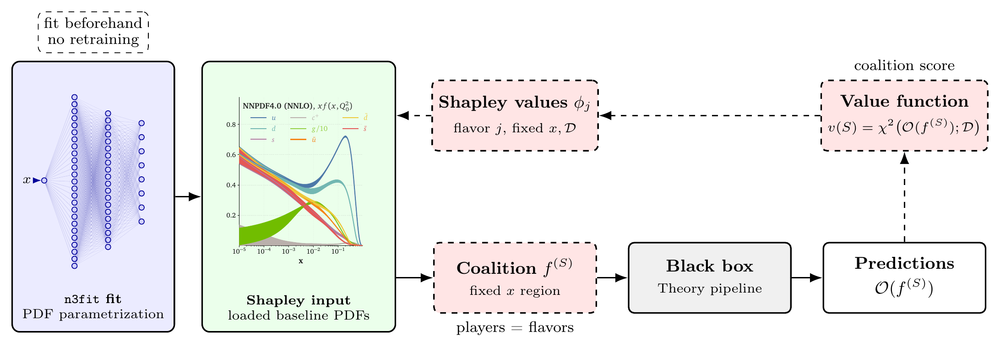
Perturb every coalition of flavors, refit \(\chi^2\), compare with / without each flavor.
A universal blind spot in the gluon
- The gluon Shapley value drops to \(\approx 0\) at intermediate \(x\) (\(\sim10^{-2}\) and \(\sim0.07\)): the data barely constrain the gluon there. QCD explain one dip but not the other.
- Yet the uncertainty band does not inflate → This loss of sensitivy could hid/absorb new physics signal !!!
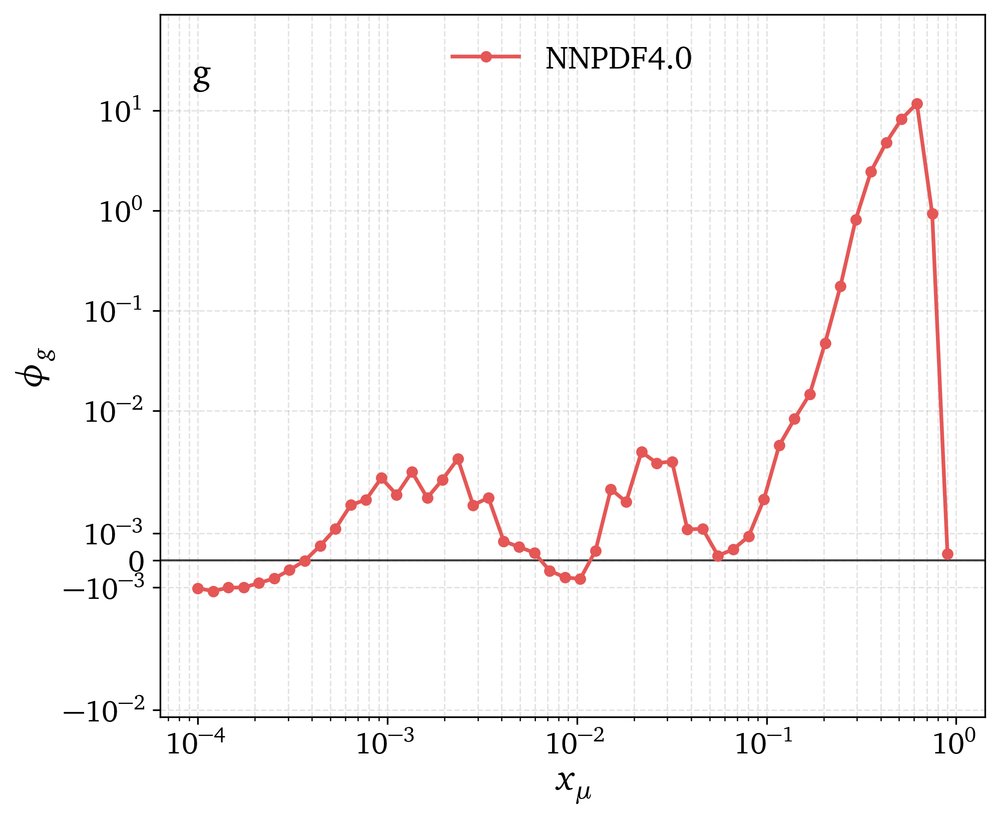
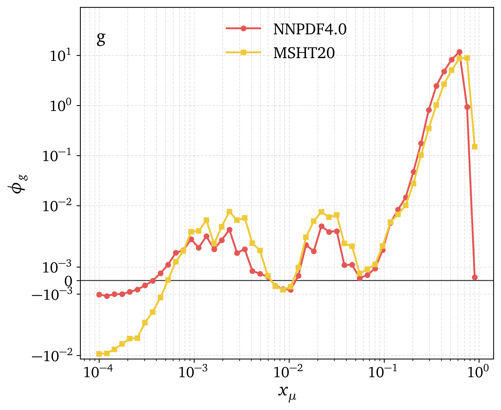
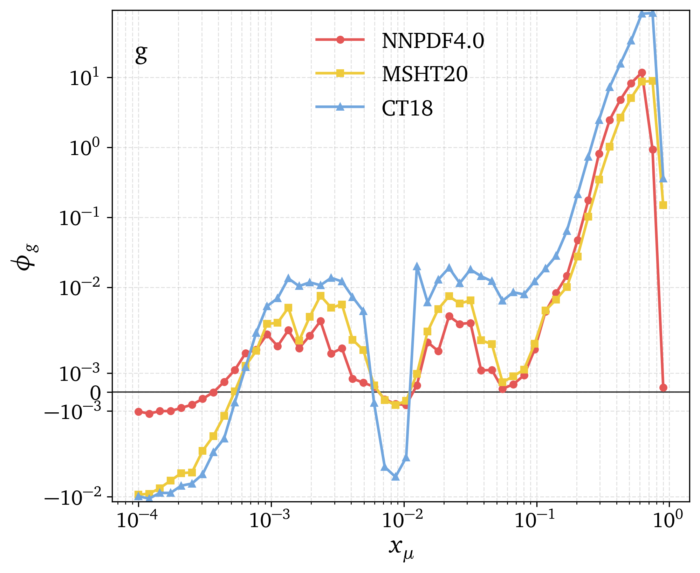
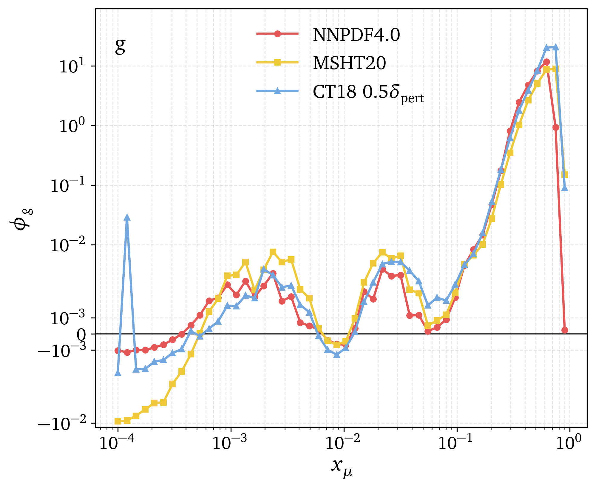
- Is it universal? NNPDF4.0 vs MSHT20 vs CT18
- MSHT20: same dip
- CT18: same dip, but sitting higher
- Rescale CT18 to \(0.5\,\delta_{\text{pert}}\) and it lands on the others: Shapley informs us about the methods uncertainties.
- Use AI-oriented interpretability to explain purely physics phenomenon.
Finding and using interpretable latents in a neutrino foundation model with sparse autoencoders
Raphaël Bonnet-Guerrini1,2, Johann Ioannou-Nikolaides3, Inar Timiryasov3, and Vincenzo Piuri11Computer Science Department, University of Milan; 2INFN, Sezione di Milano; 3Niels Bohr Institute, University of Copenhagen
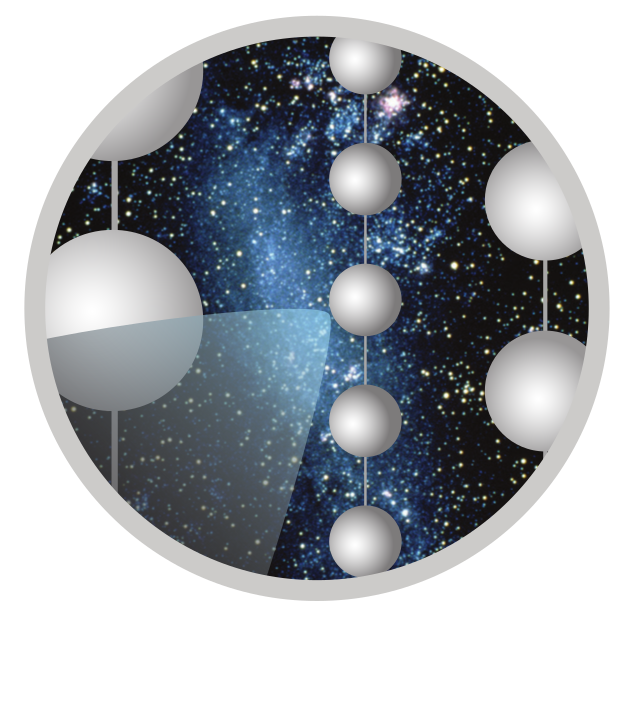
Polysemanticity and Sparse Autoencoders
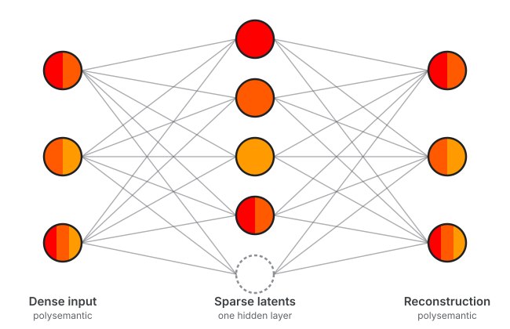
Opening the black box of a foundation model
- PolarBERT: 8M-parameter foundation model pretrained on 100M IceCube events — powerful, but opaque.
- A Sparse Autoencoder on the
CLSstate untangles them into candidate interpretable latents.
A validated atlas of physical concepts
- SAE interpretability is a hypothesis to test: association (AUROC) → selectivity (matched controls) → intervention.
- Validated latents: bright + clean events (AUROC .91, 4/4 seeds), auxiliary activity, detector depth (AUROC .986).
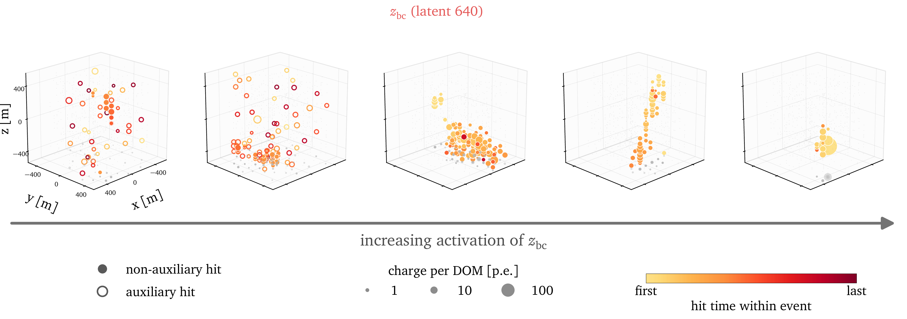
Events ordered by increasing activation of the bright-clean latent \(z_{bc}\).
Who actually uses the atlas?
Zero the latent, decode, push through the frozen heads; compare with 20 firing-rate-matched control latents.
| Intervention | Direction head \(\Delta\psi\) | Uncertainty head |
|---|---|---|
| remove \(z_{bc}\) | +0.06° null | +0.31 causal |
| remove clean pair | +0.03° null | +0.32 causal |
| remove clean family (194) | −0.02° null | +0.78 causal |
The direction head barely reads the atlas … but an uncertainty head on the same CLS state does → interpretable latents become usable.
Physics concepts are quantitative (energy, depth, event quality) with simulated ground truth → every latent is tested: association, selectivity, causal intervention.
LLM concepts are fuzzy and judged by eye. Scientific foundation models are a testbed where interpretability methods can be validated, and the lessons transferred back.